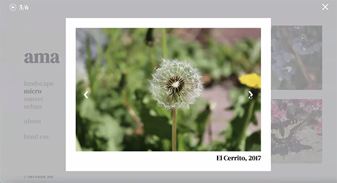
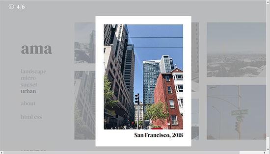
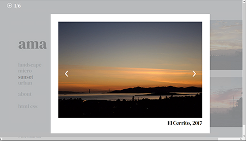

I noticed that when all the users were testing the flipping through images, whether it was manually, or automatically, the transitions between images weren't quite working as intended. I was using a fading transition to switch between images. However what I noticed on other people's screens as they were testing was that the image would fade, and before switching to the next image, it would then quickly show that same image before moving on to the next image. Later, I tried it on my own computer and noticed it happening as well. One of my testing questions was about what could be improved about the image transition. And most of the feedback from that question was to make the transitions smoother and fix the part of the image that was showing up again for a second before moving to the next image.
It was easy for everyone to navigate through the site and knew what to do for the most part. They were able to complete the three tasks easily. Each of the users navigated through the site and clicked on the images to see the overlay come up. They hovered over the image and were able to see the arrows come up and they then used those to flip through the images. They thought the arrow placement was good. I did get a suggestion about changing the cursor when the mouse is on an arrow to make it more clear that it is clickable. They were also able to click on the play button for the automatic slideshow.
Another observation I did notice was that the play button may not have been that obvious. One user didn't notice it all and had trouble finding it and got stuck on that part. Another user found it but a while after they had completed the two other tasks, so the button may not have been as obvious to them as well. The third user found it early on and was able to do that task easily. However, based on the observation, I think making the button a little more obvious may make it easier to see. A suggestion I got was possibly making it bigger, or have some text that tells the user what the button is for.
How I will update my final project based on the feedback is changing the cursor when the mouse is over the arrows in the overlay part. A big thing is fixing the transition between images. I would like to try and fix the image popping up for a second before going away if I am able to. Another update is adding a text that explains that the play button is to start the slideshow. I think I may have it there the very first time a user clicks on an image so that the text will show up under the button for a few seconds before disappearing forever. I think having the text there all the time would look weird as well as seem like too much unnecessary text.